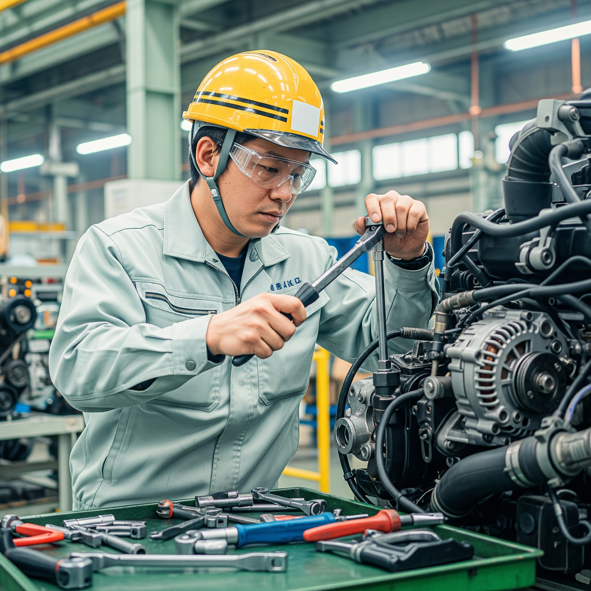

Section1: 総合工学システム学科の概要
総合工学システム学科とは、一般科目（人文社会科目、理数系科目、保健・体育、外国語科目、芸術等）を学ぶ学科である。 そして、この学科は３つの目標からなる。 多様性の理解と基礎的な学力、広い視野と教養の３つの目標達成によって想像力が豊かな技術者育成を目指す。

Section2: エネルギー機械コース（Ｍコース）の概要
- ポイント1: 基礎から機械系の科目について学べる！
- ポイント2: 分野の派生が広い！
- ポイント3: ホットなエネルギー分野について学べる！
エネルギー機械コースは人のより良い暮らしと環境・エネルギーとの共生を実現する技術の習得を目指すコースである。 このコースは世界的にホットなエネルギーや環境の要素を取り入れたコースあるため、未来を堅実に見据えることができる。 そして、Ｍコースはあらゆる業界においてベースとなる機械系であるためこれからも必要とされる人材である。 次にコースの科目の中でも私が推している科目は熱力学である。 なぜなら、このコースはエネルギー機械とあるようにエネルギーを司る技術を取り扱う。 エネルギーを扱う時は熱が基本であり重要になる。よって、このコースのコンセプトでは熱力学を学ぶ必要になってくる。 内容としては、熱やエネルギーの移動とそれによって生じる物質の状態変化を学ぶ物理学の一分野である。 それから、熱機関の効率や化学変化、物質の相変化などに用いる。 最後にこのコースは地道に頑張ることができるコースである。興味を持っていただけたならぜひ来ていただきたい。